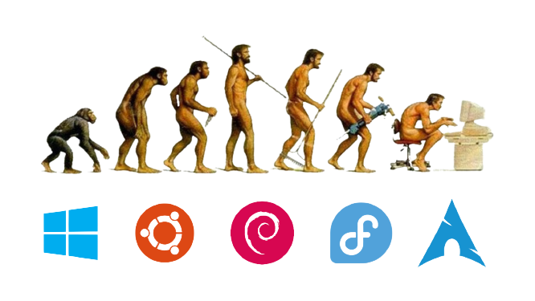

My Journey: From Ubuntu to Arch Linux
My adventures with GNU/Linux systems began around the year 2017, when I finally managed to get my first computer working. Having a personal computer, with which I could do everything I wanted, I started exploring other operating systems besides Windows.

1. Ubuntu
My journey began, like many others, with the Ubuntu operating system, as it was highly recommended for beginners like me. Even so, every week I had to reinstall it because I always found a way to make it stop working.
At that time, the Linux paradigm for personal computers was very different: there was not as much information or compatible applications as there are today. To make matters worse, I had some hardware that was not well supported by Linux, so things did not always work as they should.
Despite the difficulties, I do not regret starting with Ubuntu. With the number of times I had to reinstall it, I learned a lot about the system, lost my fear of using the terminal, and above all, learned to research and find solutions to my problems.
2. Debian
After about 2 years of using Ubuntu, I decided to move on to Debian. Since Ubuntu is based on Debian, the transition was quite easy, but I still learned new things.
When I discovered that not everything was GNOME and there were some obscure things called “Tiling Window Managers”, I was fascinated and my eyes lit up. If until then I preferred to use the GNOME graphical interface, now I wanted to try something different, more minimalist, more efficient, and that made me feel like a hacker.
I installed i3, a Tiling Window Manager, configured it my way, and used Debian for 2 years.
3. Debian SID
Debian itself is a distribution that focuses on stability, but because of this, the packages are a bit older.
Stability is important, but it reaches a point where having old packages becomes somewhat limiting. So, for that reason, I started using Debian SID. SID is the development version of Debian. It is an “unstable” version since it is updated very frequently, although I have never had any problems with it.
I remained on Debian SID until the beginning of 2021, which coincided with the time when GNOME started to become really good.
4. Fedora
My main reason for switching distributions was GNOME 40. GNOME 40 was a completely new version of GNOME, which brought many improvements and new features. In addition, apt is not the best package manager in the world. Fedora uses dnf, which is slower, but much more robust.
Although I liked Fedora a lot because of the availability of software, I started to notice that it doesn’t have great support for NVIDIA graphics cards. Installing the drivers was simply a headache, a process that I would not recommend to even the most basic Windows user.
So I stayed on Fedora until last week when I got tired of this NVIDIA driver situation and decided to try Arch Linux.
5. Arch Linux
So far everything I’ve said has been a long introduction, now the interesting part begins. Usually, when people talk about Arch Linux, they say how difficult it is to install and configure. There are horror stories of people who spent days trying to install the system and who, in the end, gave up.
None of that is true. Installing Arch Linux is simple and fast. Configuration is a bit more complicated, but it’s not that big of a deal, just knowing how to read and follow instructions.
Installing Arch Linux was as simple as running a command and following the instructions. Configuration was as simple as reading a guide and following the instructions. There’s nothing special, there’s nothing difficult. The Arch Wiki is one of the best documentations I’ve ever seen in any operating system.
Using Arch is as simple as any other distribution. There are so many available packages and AUR? AUR is the best package repository I’ve ever seen. It’s as simple as installing a package from the official repository, but with the advantage that anyone can create a package and make it available to everyone.
Of course, not everything is perfect. Arch Linux is not for everyone. So far, I have only had a few minor bugs in some packages, but nothing that couldn’t be resolved with a downgrade. There are also some things that are slightly different from what we are used to, but nothing that can’t be solved with a little research.
Conclusion
If there’s one thing I don’t regret, it’s ditching Windows and starting to use Linux. GNU/Linux is a fantastic operating system, with a fantastic community and fantastic documentation.
The level of customization that can be achieved is fantastic. You can do practically anything you want, as long as you know what you’re doing. Without a doubt, the time I spent learning to use these operating systems was well worth it.
If you’re thinking of starting in the world of GNU/Linux, don’t be afraid. It’s a fantastic world, but it’s also a world that has a steeper learning curve than Windows. But if you’re willing to learn, you’ll see that it’s worth it.
What will be the next distribution I try? I don’t know. Maybe Gentoo, maybe Void Linux, maybe NixOS. I just know that I’ll keep learning and exploring this fantastic world!